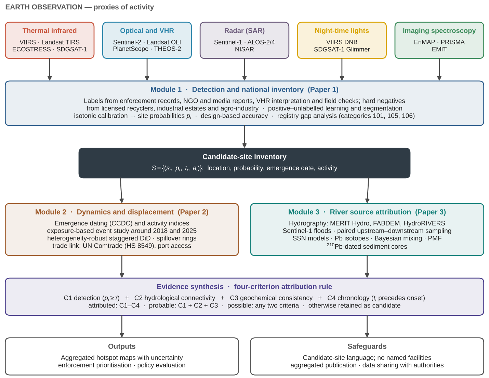
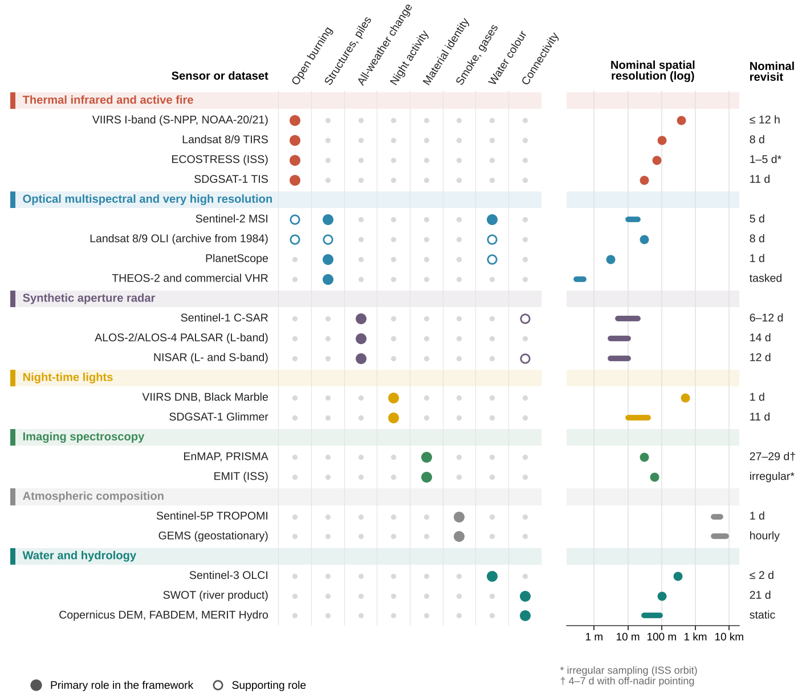
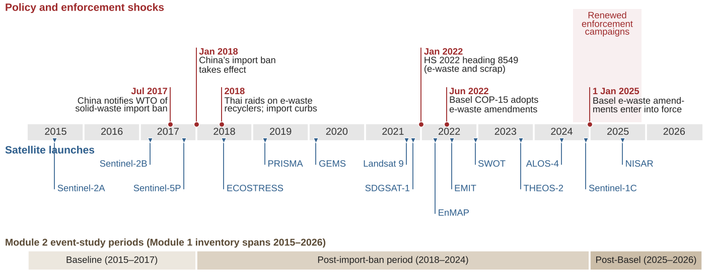
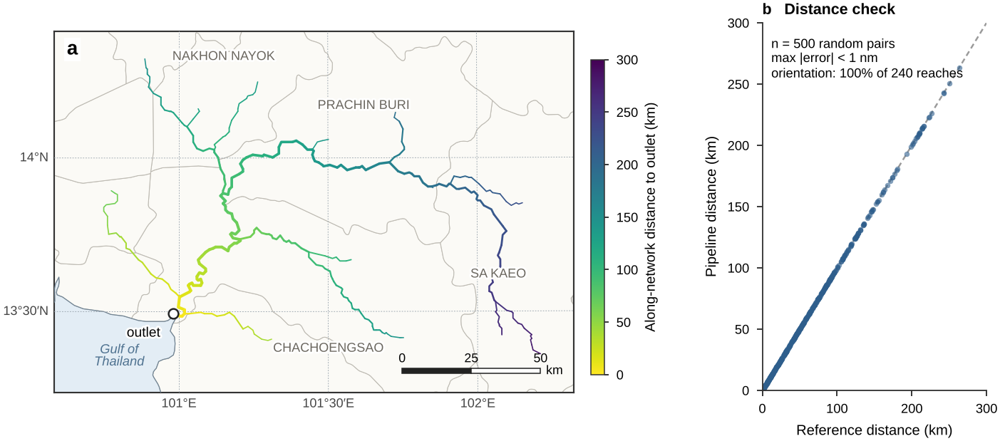
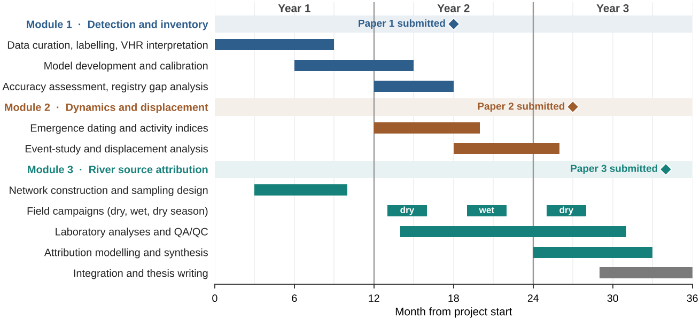

1 Introduction
The world generated an estimated 62 million tonnes of electronic waste (e-waste) in 2022, of which only 22.3% was documented as formally collected and recycled (Baldé et al., 2024). The remainder is stored, landfilled, traded or processed informally, typically through manual dismantling, open burning of cables and casings, heating and acid leaching of printed circuit boards, and crude smelting (Robinson, 2009; Wong et al., 2007). These practices release lead (Pb), cadmium (Cd), copper (Cu), antimony (Sb) and other metals, together with brominated flame retardants and dioxin-like compounds, into air, dust, soils and surface waters, with documented consequences for human health (Leung et al., 2008; Grant et al., 2013).
The geography of informal processing is not static. Trade in electronic discards responds to regulation, prices and enforcement (Lepawsky, 2015), and China’s 2018 restrictions on imports of solid waste redirected large volumes of scrap towards Southeast Asia (Brooks et al., 2018). In Thailand, enforcement actions from 2018 onwards uncovered recycling facilities processing imported e-waste in the eastern provinces, while household-scale dismantling in the Northeast predates these shocks and is supplied largely through domestic collection (Puangprasert and Prueksasit, 2019). Exposure studies have documented brominated flame retardants at Thai e-waste storage facilities (Muenhor et al., 2010), but the spatial extent of processing and its consequences for river systems remain poorly characterised.
Three gaps motivate this work. First, there is no national inventory: enforcement is largely reactive and complaint-driven, so known sites form a biased sample of the true distribution. Second, the dynamics are unknown: it is unclear whether policy shocks reduced processing or displaced it to new districts, a question analogous to the pollution-haven hypothesis in the trade-and-environment literature (Copeland and Taylor, 2004). Third, attribution is weak: metals in rivers have many sources, tidal rivers mix bidirectionally, and existing studies typically report concentrations near suspected sites without quantitatively linking them to upstream sources.
Remote sensing and field geochemistry have complementary blind spots. Satellites observe proxies of activity—heat, new structures, material piles, night-time lighting and water-colour anomalies—but not e-waste itself, and the contaminants of concern are not optically active. Field geochemistry measures contaminants precisely but at few locations, and without a source inventory it cannot establish where contamination originates. Linking the two requires an explicit chain of evidence from orbit to sediment. This paper proposes such a chain. Its contributions are:
- an integrated framework linking national-scale satellite detection, policy-driven dynamics and river source attribution (Figure 2);
- an observation model that maps processing activities to remotely sensed proxies, sensors and confounders (Table 2 and Figure 3);
- a quasi-experimental design for estimating the emergence and displacement of processing sites around trade-policy shocks (Figure 4);
- a four-criterion rule that reports a site as a contamination source only when detection, hydrological connectivity, geochemistry and chronology agree (Figure 5);
- a protocol of legal, ethical and safety safeguards for mapping suspected illegal activity; and
- an open implementation, checked on the real Bang Pakong river network and evaluated in simulations that led to a stricter evidence rule (Section 9).
Section 2 reviews the background and Section 3 describes the study area. Section 4 introduces the framework, Sections 5, 6 and 7 detail its three modules, Section 8 describes evidence synthesis and Section 9 reports the implementation and its validation. Section 10 sets out safeguards, Section 11 discusses expected contributions and limitations, and Section 12 presents the work plan. The framework and analysis plan are specified in advance; empirical results will be reported in companion studies.
2 Background
2.1 Environmental signatures of informal processing
Informal e-waste processing combines activities with distinct footprints. Manual dismantling and sorting take place in roofed sheds or open yards and produce piles of casings, cables and boards. Cable insulation and plastics are burned to recover copper, generating brief, small fires and dense smoke. Printed circuit boards are heated to remove components or leached with acids to recover precious metals, producing acidic, metal-rich effluents. Residues are stockpiled, buried, or dumped into ponds and abandoned excavation pits. These activities leave potentially observable traces—thermal anomalies, changes in roofs and bare surfaces, heterogeneous material spectra, persistent night-time lighting and anomalous colour in small water bodies—but none of these traces is unique to e-waste. The framework therefore treats detection as probabilistic and evidence-based rather than as direct identification.
2.2 Remote sensing of waste sites
Deep learning applied to satellite and aerial imagery now supports the detection of landfills and dumpsites at regional to global scales (Sun et al., 2023; Torres and Fraternali, 2023), and Sentinel-2 time series have been used to monitor terrestrial plastic-waste sites (Kruse et al., 2023). These studies target large, persistent waste bodies. Informal e-waste processing differs: individual sites are often smaller than a hectare, partly roofed and intermittently active. Thermal detection is also challenging. The VIIRS 375 m active-fire product detects smaller fires than earlier 1 km products (Schroeder et al., 2014), and Landsat-8 OLI supports active-fire detection at 30 m (Schroeder et al., 2016), but brief cable fires remain close to detection limits, and dry-season agricultural burning in Thailand produces a large background of genuine fire detections. Plastics have diagnostic short-wave infrared absorption features (Garaba and Dierssen, 2018) that spaceborne imaging spectrometers such as EnMAP and PRISMA can in principle resolve (Guanter et al., 2015; Cogliati et al., 2021), although a typical processing yard is spectrally mixed within a 30 m pixel. Colour anomalies of small water bodies can be quantified with the Forel–Ule scale and hue angle (van der Woerd and Wernand, 2015).
2.3 Source attribution of trace contaminants in rivers
Receptor models such as positive matrix factorisation (PMF) resolve measured concentrations into source profiles and contributions (Paatero and Tapper, 1994; Norris et al., 2014), and Bayesian mixing models estimate source proportions from tracers with explicit uncertainty (Stock et al., 2018). Lead isotope ratios are among the most informative tracers because geogenic, industrial and gasoline-derived lead often carry distinct signatures (Komárek et al., 2008). Spatial stream-network (SSN) models represent dependence along flow-connected and flow-unconnected paths in river networks (Ver Hoef and Peterson, 2010; Peterson et al., 2013) and are implemented in open software (Dumelle et al., 2024). Dated sediment cores reconstruct contamination histories, typically using 210Pb chronologies (Appleby and Oldfield, 1978). In estuaries, salinity alters trace-metal partitioning, for example by promoting Cd desorption through chloride complexation (Du Laing et al., 2009).
2.4 The Thai context
Thailand regulates factories under the Factory Act B.E. 2535 (1992). Waste-sorting and recycling facilities are licensed in dedicated factory categories (notably categories 105 and 106), and the resulting registry provides a reference for distinguishing licensed from unlicensed activity. The Pollution Control Department monitors surface-water quality in major rivers. The eastern provinces, including those of the Eastern Economic Corridor, combine dense industrial land use, port access through Laem Chabang and repeated reports of unlicensed processing, whereas the Northeast hosts village-scale dismantling linked to domestic collection networks. Monsoon cloud cover, roughly from May to October, limits optical observation, and dry-season agricultural burning, roughly from December to April, dominates thermal anomalies. Internationally, amendments to the Basel Convention adopted in 2022 extended prior-informed-consent controls to all e-waste from 1 January 2025 (Secretariat of the Basel Convention, 2022), and the 2022 edition of the Harmonized System introduced heading 8549 for electrical and electronic waste and scrap, which improves the traceability of trade statistics.
3 Study area
The national domain covers Thailand’s 77 provinces (about 513,000 km2). Two case regions represent contrasting modes of processing (Figure 1). The eastern case region is the Bang Pakong river system, formed by the confluence of the Prachin Buri and Nakhon Nayok rivers and discharging to the upper Gulf of Thailand. In the HydroRIVERS network (Lehner and Grill, 2013), the basin drains about 22,000 km2 at its outlet, with a modelled long-term mean discharge of about 480 m3 s. Its lower reach is tidal and subject to saline intrusion in the dry season, and its floodplain is flood-prone. The basin spans Prachin Buri and Chachoengsao, two provinces with repeated reports of industrial-scale processing. The northeastern case region spans the Chi and Mun basins, where household-scale dismantling and open burning have been reported in Kalasin and Buri Ram. Rayong, in the East Coast basin, provides a hazardous industrial-waste context that is useful for testing the specificity of detection (Table 1).
![Study context. (a) Thailand, with provinces where industrial-scale e-waste processing or related enforcement (East) and household-scale dismantling and open burning (Northeast) have been publicly reported. Markers show example districts used as seed localities, boxes show the extents of panels b and c, and the inset locates Thailand in Southeast Asia. (b) Eastern case region with the Bang Pakong river system (dark blue), the proposed case basin for Module 3. (c) Northeastern case region in the Chi and Mun basins. Hatched polygons are example districts shown at district level only; they are not findings about any facility or community, and province categories will be re-verified against primary records. Projection: Albers equal-area conic (standard parallels 8°N and 18°N, central meridian 101°E). Data: Natural Earth (Natural Earth 2026); HydroRIVERS v1.0 (Lehner and Grill 2013); OpenGISData-Thailand (OpenGISData-Thailand contributors 2026).](figures/fig1_study_area.png)
Table 1. Seed localities used to define training and validation strata. Entries are compiled from public media, enforcement and NGO reports and are given at district level only; they define sampling strata and are not findings or allegations about any facility or community. All entries will be re-verified against primary records during data curation.
| Region | Province | Example district | Reported setting | River basin | Role in the framework |
|---|---|---|---|---|---|
| East | Prachin Buri | Si Mahosot | Industrial-scale processing cluster | Bang Pakong | Training seeds; Module 3 case basin |
| East | Chachoengsao | – | Industrial-scale processing; enforcement since 2018 | Bang Pakong | Training seeds; Module 3 case basin |
| East | Chon Buri | – | Recycling facilities in the port hinterland | East Coast, Bang Pakong | Seeds; port-exposure variable (Module 2) |
| East | Rayong | Ban Khai | Hazardous industrial-waste storage incident | East Coast | Specificity test (non-e-waste analogue) |
| Northeast | Kalasin | Khong Chai | Household-scale dismantling and open burning | Chi | Seeds; burning discrimination |
| Northeast | Buri Ram | Ban Mai Chaiyaphot | Household-scale dismantling and open burning | Mun | Seeds; burning discrimination |
4 Framework overview
The framework (Figure 2) follows five design principles.
- Proxy-based detection with an explicit observation model. Each sensor is used for a stated proxy with stated confounders (Table 2).
- Convergence of independent evidence. No single line of evidence suffices to attribute contamination to a site.
- Temporal consistency. Causes must precede effects, so satellite-derived emergence dates constrain admissible sources.
- Uncertainty propagation. Detection probabilities, model uncertainty and analytical uncertainty are carried through to attribution.
- Safeguards by design. Outputs are probabilistic candidates, published at aggregated resolution.
Module 1 produces a candidate-site inventory , where is the location of site , the calibrated probability that it hosts e-waste processing or dumping, its emergence date and an activity index. Module 2 uses to analyse dynamics, Module 3 uses it as the source inventory for attribution, and a synthesis step combines the evidence (Section 8).

Table 2. Observation model: remotely sensed proxies of e-waste processing and dumping, their physical basis, primary sensors and principal confounders.
| Proxy | Physical basis | Primary sensors | Principal confounders |
|---|---|---|---|
| Open burning and hot targets | Emitted radiance at 3.7–4 μm and 10–12 μm; SWIR response of very hot targets | VIIRS I-band, Landsat 8/9, ECOSTRESS, SDGSAT-1 TIS, Sentinel-2 SWIR | Agricultural burning, furnaces and flares, hot metal roofs |
| New structures and waste piles | Reflectance and texture change; SAR backscatter and coherence change | Sentinel-2, PlanetScope, VHR, Sentinel-1, ALOS-2/4, NISAR | Warehouses, construction, licensed scrapyards, farm sheds |
| Material composition | SWIR absorption by hydrocarbons in plastics; spectra of metals and ash | EnMAP, PRISMA, EMIT | Construction plastics, landfills, mixed pixels |
| Night-time activity | Radiance from artificial lighting | VIIRS DNB (Black Marble), SDGSAT-1 Glimmer | New housing, roads, changes in lighting technology |
| Water-colour anomalies | Hue-angle shift and turbidity in ponds and pits | Sentinel-2, PlanetScope | Algal blooms, excavation turbidity, aquaculture |
| Smoke and trace gases | Column CO, NO2 and aerosol index | Sentinel-5P TROPOMI, GEMS | Biomass burning, traffic, industry (regional context only) |
| Hydrological connectivity | Elevation, flow routing and inundation | FABDEM, Copernicus DEM, MERIT Hydro, Sentinel-1 floods, SWOT | Canals and pumping in flat terrain, poorly represented in DEMs |
5 Module 1: detection and national inventory
5.1 Data and features
Module 1 draws on the sensor portfolio in Figure 3. Sentinel-2 (Drusch et al., 2012) and Sentinel-1 (Torres et al., 2012) form the national backbone at 10–20 m resolution. Thermal products from VIIRS, Landsat 8/9, ECOSTRESS and SDGSAT-1 provide evidence of burning and hot targets (Schroeder et al., 2014, 2016; Fisher et al., 2020; Guo et al., 2023); VIIRS Black Marble (Román et al., 2018) and SDGSAT-1 Glimmer capture night-time activity; and the Landsat archive (Masek et al., 2020) extends change histories. PlanetScope, THEOS-2 and commercial very-high-resolution (VHR) imagery are used for verification rather than wall-to-wall mapping. Features are computed per 10 m pixel and aggregated to candidate objects. They include seasonal spectral composites and indices, SAR backscatter statistics and interferometric coherence change (Preiss et al., 2006), the recurrence and timing of thermal anomalies, night-time radiance trends and texture measures. Embeddings from geospatial foundation models, such as AlphaEarth Foundations (Brown et al., 2025) and Prithvi-EO-2.0 (Szwarcman et al., 2024), are evaluated as additional features because they can reduce the number of labels required. Processing is implemented in Google Earth Engine (Gorelick et al., 2017) and open-source Python.

5.2 Reference data and labelling
Positive examples are compiled from enforcement records, NGO and media reports, VHR photo-interpretation and field verification. Because these sources over-represent sites that attracted complaints or enforcement, labelled positives are a biased sample, and unlabelled locations cannot be assumed negative. We therefore treat detection as a positive–unlabelled (PU) learning problem (Bekker and Davis, 2020). Hard negatives are sampled explicitly from licensed recyclers in the factory registry, industrial estates, agro-industrial facilities such as rice and sugar mills, construction sites and landfills. Each label records its source, date and confidence, and an active-learning loop directs VHR interpretation towards uncertain candidates.
5.3 Models
Detection proceeds in two stages. A national screening stage applies pixel-level segmentation—a U-Net-type network (Ronneberger et al., 2015) and gradient-boosted trees on embedding features—to produce a candidate surface, with a focal loss to address extreme class imbalance (Lin et al., 2017). A site-level stage aggregates evidence for each candidate object, including thermal recurrence and night-time activity, and outputs a probability calibrated by isotonic regression (Niculescu-Mizil and Caruana, 2005). Model selection and error estimation use spatial block cross-validation to avoid optimistic bias from spatial autocorrelation (Roberts et al., 2017).
5.4 Accuracy assessment and inventory estimation
Accuracy is estimated by design-based inference from a stratified random sample of map units, interpreted on VHR imagery and verified in the field where feasible (Olofsson et al., 2014). Strata are defined by predicted probability and region. We report user’s and producer’s accuracies with confidence intervals and estimate the number and area of sites per province with design-based uncertainty, rather than counting map detections.
5.5 Registry gap analysis
Candidates are matched to registered facilities in factory categories 101, 105 and 106 within a spatial tolerance that accounts for geocoding error. The share of high-probability candidates without a registry match, and its geography, are key outputs. Matching results are published only at aggregated resolution (Section 10).
6 Module 2: dynamics and policy displacement
6.1 Emergence dating and activity indices
For each candidate site, the emergence date is estimated from dense time series with continuous change detection (Zhu and Woodcock, 2014), applied to Landsat and Sentinel-2 reflectance and Sentinel-1 backscatter. An annual activity index combines thermal recurrence, night-time radiance and roof-area change, standardised within region.

6.2 Identification strategy
Outcomes are aggregated to district–year panels: the number of active sites, new emergences and total activity. Because the policy shocks in Figure 4 are common in time, identification relies on differential exposure defined by predetermined characteristics: travel time to Laem Chabang and other gateways, the pre-2018 presence of licensed recyclers and the pre-period industrial land share. The event-study specification is (1) where is the outcome in district and year , are district fixed effects, are region-by-year effects, is exposure, is the shock year and trace dynamic effects relative to the year before the shock. Pre-period coefficients () test for differential pre-trends. Where treatment is staggered, as with district-level enforcement episodes, we use estimators that are robust to heterogeneous effects (Callaway and Sant’Anna, 2021; Sun and Abraham, 2021) and avoid two-way fixed-effects comparisons that use already-treated units as controls (Goodman-Bacon, 2021).
6.3 Displacement
Enforcement in one district may push activity into neighbouring districts, which violates the assumption of no interference between units. Rather than treating this as a nuisance, we estimate spillovers explicitly with rings of neighbouring districts around enforced districts, following designs used for pollution spillovers across jurisdictions (Lipscomb and Mobarak, 2017). Net effects are reported as the sum of direct and spillover estimates.
6.4 Trade linkage
Annual imports and exports of e-waste and related scrap are compiled from UN Comtrade, using mirror statistics and HS heading 8549 from 2022 onwards with predecessor codes before then, to test whether changes at import-dependent sites track trade flows.
7 Module 3: river source attribution in the Bang Pakong basin
7.1 Hydrological network
Flow routing is derived from MERIT Hydro (Yamazaki et al., 2019) and FABDEM (Hawker et al., 2022) and cross-checked against HydroRIVERS (Lehner and Grill, 2013). Because DEM-based routing misrepresents canals and pumping in flat floodplains, the network is corrected with irrigation-canal data and field reconnaissance. Each candidate site is linked to its receiving reach, and along-network distances to downstream monitoring points are computed. Sentinel-1 flood maps (Twele et al., 2016) identify events that connect otherwise isolated sites to the channel network, and SWOT observations (Biancamaria et al., 2016) provide water-surface elevation context for the lower reach.
7.2 Sampling design
Sampling follows a paired upstream–downstream design around candidate sites, with reference stations in tributaries without candidates (Figure 5a). Paired upstream–downstream comparisons are an established design for isolating point-source effects in rivers (Keiser and Shapiro, 2019). Surface water (dissolved and particulate fractions), suspended sediment and bed sediment are collected in the dry season, the wet season and after flood pulses. Sediment cores are taken from depositional settings with undisturbed accumulation, such as floodplain ponds and oxbows, rather than from the tidal channel, where resuspension blurs chronologies. Salinity is measured with every sample.
![Schematic of the Module 3 attribution design (illustrative; not data). (a) Paired upstream (U) and downstream (D) stations around candidate sites (S), a reference station (R) in a tributary without candidates, a sediment core (C) in a floodplain pond, a flood-connected area and the tidal limit. (b) Lead-isotope mixing space with geogenic, legacy-gasoline and e-waste end members; downstream samples shift towards the e-waste end member. (c) Expected core chronology, in which marker enrichment begins after the satellite-derived emergence date t_i of upstream candidates.](figures/fig5_attribution_schematic.png)
7.3 Analytes and marker suite
The marker suite (Table 3) combines metals that are abundant in e-waste with organic compounds that are specific to it. Because each metal also has non-e-waste sources, attribution relies on ratios and combinations—for example, covarying Pb and Sn from solder together with polybrominated diphenyl ethers (PBDEs) from flame-retarded plastics—rather than on single elements.
Table 3. Geochemical marker suite for Module 3. Attribution relies on combinations and ratios of markers because each metal also has non-e-waste sources.
| Marker | Principal e-waste source | Method | Diagnostic value and caveats |
|---|---|---|---|
| Cu | Wiring, printed circuit boards | ICP-MS | High loading; also agricultural and industrial sources |
| Pb, Sn | Solder; Pb also in cathode-ray-tube glass | ICP-MS | Pb–Sn covariation indicates solder; Pb also from legacy gasoline |
| Sb | Sb2O3 synergist in flame-retarded plastics | ICP-MS | Tracer of the plastic fraction; also from brake wear |
| Zn, Ni, Cd | Galvanised parts, batteries | ICP-MS | Supporting markers; Cd partitioning is salinity-sensitive |
| PBDEs | Flame retardants in casings and boards | GC–MS | Highly specific; hydrophobic and particle-bound |
| PCDD/Fs, PBDD/Fs | By-products of open burning | HRGC–HRMS | Burning-specific; analysed on a targeted subset |
| 206Pb/207Pb, 208Pb/206Pb | Source-specific isotopic signatures | MC-ICP-MS | End-member discrimination in mixing models (Equation 4) |
| 210Pb, 137Cs | – | Gamma spectrometry | Sediment-core chronology |
7.4 Statistical attribution
For monitoring point , an upstream e-waste loading index is defined as (2) where is the set of candidate sites hydrologically upstream of , is the along-network distance and is a decay length estimated from the data. Concentrations or marker ratios are modelled with an SSN model, (3) where are covariates (land use, licensed facilities and wastewater treatment), and are tail-up and tail-down spatial random effects (Ver Hoef and Peterson, 2010), and indicates an e-waste signal beyond other sources. Uncertainty in , and is propagated by Monte Carlo sampling. Source proportions at each station are estimated with Bayesian mixing models of Pb isotope ratios and marker ratios (Stock et al., 2018), (4) with end members for geogenic background, legacy gasoline lead and e-waste materials characterised from local samples (Figure 5b). PMF (Paatero and Tapper, 1994; Norris et al., 2014) provides an independent, data-driven decomposition.
7.5 Chronology
Core chronologies use the constant-rate-of-supply model for 210Pb (Appleby and Oldfield, 1978), validated with 137Cs. The onset of marker enrichment is compared with the satellite-derived emergence dates of upstream candidates (Figure 5c). Agreement within dating uncertainty supports attribution, whereas enrichment that predates all upstream emergences points to other or legacy sources. Because leaded gasoline was phased out in Thailand in the mid-1990s, legacy lead must be separated isotopically from recent inputs.
7.6 The tidal reach
Bidirectional flow in the tidal reach violates the directional assumptions of tail-up models. The tidal reach is therefore analysed separately, using salinity-normalised concentrations and, where needed, hydrodynamic modelling, and the SSN model is restricted to non-tidal reaches. Salinity-dependent partitioning (Du Laing et al., 2009) is modelled explicitly rather than ignored.
8 Evidence synthesis
For each candidate site and receiving reach, four criteria are evaluated:
- C1 Detection:
- , with the threshold chosen from the design-based accuracy assessment;
- C2 Connectivity:
- a hydrological path links the site to the reach under base-flow or documented flood conditions;
- C3 Geochemical consistency:
- downstream samples shift towards the e-waste end member relative to paired upstream samples;
- C4 Chronology:
- the onset of marker enrichment in dated sediments follows within dating uncertainty.
A site is reported as an attributed source when all four criteria hold and as a probable source when detection, connectivity and geochemistry hold (C1–C3); a site meeting any two criteria is a possible source, and otherwise it remains a candidate. This rule replaces an earlier count-based rule, under which any three criteria sufficed for the probable level, because the simulations in Section 9 showed that rule to be too permissive. Table 4 lists the hypotheses tested in each module and the evidence used.
Table 4. Pre-specified hypotheses and the evidence used to test them.
| ID | Hypothesis | Test and evidence |
|---|---|---|
| H1a | Multi-sensor fusion outperforms the best single-sensor model | Precision–recall AUC and F1 under spatial block cross-validation |
| H1b | A non-trivial share of high-probability candidates lacks a registry match | Design-based estimate of the unmatched share, by region |
| H2a | Site emergence increased in high-exposure districts after 2018 | Event-study coefficients , (Equation 1) |
| H2b | Enforcement displaced activity to neighbouring districts | Spillover-ring estimates; direct versus net effects |
| H2c | The 2025 Basel amendments reduced import-dependent but not household-scale activity | Heterogeneous post-2025 effects by site type |
| H3a | Upstream e-waste loading raises downstream marker levels | SSN coefficient with propagated uncertainty (Equation 3) |
| H3b | The e-waste fraction increases downstream of candidates | Posterior source proportions at paired stations (Equation 4) |
| H3c | Marker onset follows satellite-derived emergence | 210Pb chronology compared with |
9 Implementation and simulation-based validation
9.1 Software
The framework is implemented in two open programs (see Data and code availability). A Google Earth Engine script screens candidate sites with the four proxies of Table 2 and exports, for each site, a heuristic screening score, an activity index and an emergence date, together with a wet-season flood-frequency layer from Sentinel-1. A Python program then performs the registry gap analysis, known-site exclusion and hard-negative filtering; snaps sites and stations to a vector river network (HydroRIVERS or MERIT-Basins); computes along-network distances, the loading index of Equation 2 and marker anomalies; selects by rank association with a permutation test; and evaluates criteria C1–C4. The screening script has been checked statically and executed against a mock of the Earth Engine API that covers every configuration branch, but it has not yet been run on real imagery. The Python program was tested end to end on synthetic inputs and on the real network described next.
9.2 Network checks on the Bang Pakong river system
We applied the network module to the Bang Pakong system in HydroRIVERS v1.0 (Lehner and Grill, 2013): 240 reaches with a mean discharge of at least 12 m3 s, 658 km of channel and a maximum along-network distance of 280 km to the outlet (Figure 6a). The flow orientation inferred from network topology agreed with the digitising direction of the source data for all 240 reaches. For 500 random pairs of points, along-network distances computed by the pipeline agreed with distances measured along independently merged path lines to within m (Figure 6b). The public extract used here is geometrically simplified, so its reach lengths are a median 5.6% shorter than the HydroRIVERS attribute lengths (5th–95th percentile: 10.9% shorter to 1.0% longer); applications should use full-resolution reaches.

9.3 Simulation design
To test the statistical components, we generated synthetic worlds on the real network topology; synthetic site locations are not reported. Each replicate placed 60 candidate sites at random positions, 70% within 700 m of a channel and 30% between 700 and 2,500 m away. Each site was a true e-waste source with probability ( in a null scenario), and sources were hydrologically connected when within 600 m of a channel or, farther away, with probability 0.3 through flooding. Screening scores were drawn from Beta(5, 2) for sources and Beta(2, 4) for non-sources to mimic imperfect satellite discrimination. Twenty-five stations were placed on the network, and marker concentrations followed (5) where sums over connected sources, is the corresponding load from three non-e-waste industrial confounders, and the sensitivities and make the confounders raise Cu, Cd, Ni and Zn but not Sn or Sb. Two samples were drawn per station, and reference stations were chosen among stations without upstream loads. Dated cores were simulated at stations with , with onsets following the emergence of the dominant source by years, and at up to three confounder-only stations with legacy onsets between 2005 and 2016. Licensed factories, decoy factories just beyond 500 m, other-category factories, previously reported sites and hard negatives were placed at known distances. Three scenarios (, 8 and 20 km) and the null scenario were each replicated 150 times, with 99 permutations per association test.
9.4 Results
Registry, known-site and hard-negative flags matched the geometric truth for every site in all 600 replicates (0 mismatches). This required replacing polygonal buffers, which slightly under-cover a circle, by exact distance tests: an earlier version misclassified a point lying just inside the 300 m hard-negative radius, and a dedicated test with points concentrated at the boundary found no remaining mismatches.
The selected was within a factor of 2.5 of the true value in 43%, 79% and 97% of replicates for , 8 and 20 km, with a tendency to select values above the truth (Figure 7a). The association test detected the e-waste signal at in 48%, 89% and 98% of replicates (Figure 7b). Under the null scenario it rejected in 7.3% of replicates (95% interval 4.1–12.7%), slightly above the nominal 5%, which is consistent with spatially structured contamination weakening the exchangeability that the permutation test assumes.
For attribution (Figure 7c and Table 5), the original count-based rule was too permissive: sites meeting any three criteria were true sources with a precision of only 0.54–0.65. Requiring geochemical evidence together with detection and connectivity (C1–C3) raised precision to 0.84–0.90, and the attributed level (C1–C4) reached 0.85–0.95, at the cost of recall (0.27–0.36 and 0.18–0.35 of attributable sources). Criterion C3 was met by 0.20–0.54 of true sources with a downstream station but by only 0.01–0.10 of non-sources exposed solely to non-e-waste confounders, which confirms the value of e-waste-specific markers (Figure 7d). Among all non-sources, however, C3 was met by 0.08–0.25 of sites, rising with , because a site lying between a clean upstream station and a contaminated downstream station inherits the signal of any source between them.
![Simulation-based validation with synthetic sites and stations on the real Bang Pakong network (150 replicates per scenario). (a) Selected decay length λ; triangles mark the grid value closest to each true value. (b) Cumulative distribution of permutation p-values; the dashed line is the null scenario and the dotted line marks p=0.05. (c) Precision (filled circles) and recall of attributable sources (open squares) at four evidence thresholds, with 95% Wilson intervals (Wilson 1927). (d) Share of sites meeting criterion C3 among true sources, all non-sources and non-sources exposed only to non-e-waste confounders.](figures/fig8_simulation.png)
Table 5. Simulation-based validation on the real Bang Pakong network topology with synthetic sites and stations (150 replicates per scenario; 95% Wilson intervals (Wilson, 1927) in brackets). Precision and recall refer to unregistered candidate sites; recall is the share of attributable sources (true, hydrologically connected sources with a station within downstream) that reach the level. Under the null scenario the association test rejected in 7.3% of replicates (95% interval 4.1–12.7%).
| Metric | km | km | km |
|---|---|---|---|
| Selected within a factor of 2.5 of | 43% | 79% | 97% |
| Power of the association test () | 48% | 89% | 98% |
| Precision, possible (2 criteria) | 0.61 [0.58–0.63] | 0.51 [0.49–0.53] | 0.38 [0.36–0.40] |
| Precision, probable, count rule (3 criteria) | 0.65 [0.60–0.70] | 0.65 [0.62–0.68] | 0.54 [0.51–0.56] |
| Precision, probable, strict rule (C1–C3) | 0.85 [0.78–0.90] | 0.90 [0.86–0.93] | 0.84 [0.80–0.88] |
| Precision, attributed (C1–C4) | 0.85 [0.76–0.91] | 0.95 [0.91–0.97] | 0.87 [0.83–0.90] |
| Recall, probable, strict rule | 0.27 [0.23–0.32] | 0.33 [0.29–0.36] | 0.36 [0.33–0.39] |
| Recall, attributed | 0.18 [0.14–0.22] | 0.27 [0.23–0.30] | 0.35 [0.32–0.38] |
| C3 met, true sources | 0.20 [0.18–0.23] | 0.40 [0.37–0.43] | 0.54 [0.51–0.57] |
| C3 met, non-sources | 0.08 [0.07–0.09] | 0.15 [0.14–0.17] | 0.25 [0.23–0.26] |
| C3 met, non-sources exposed only to confounders | 0.10 [0.05–0.20] | 0.01 [0.00–0.05] | 0.04 [0.02–0.08] |
9.5 Implications for the analysis plan
Four changes follow. First, the evidence rule in Section 8 now requires C1–C3 for the probable level. Second, the permutation test is used only for screening and for choosing ; inference relies on the SSN model of Equation 3, which represents spatial dependence explicitly. Third, sampling designs should bracket individual candidates, or groups of candidates within one sub-catchment, with paired stations, because C3 cannot separate several candidates that lie between the same pair of stations. Fourth, recall is bounded by station density: only 27%, 57% and 78% of true connected sources had a station within downstream in the three scenarios, so station placement should be optimised against the candidate inventory before fieldwork.
10 Ethical, legal and safety safeguards
Mapping suspected illegal activity carries risks for communities, operators and researchers. Outputs are therefore described as candidate sites with calibrated probabilities, never as findings of illegality, and individual facilities are not named. Public products are aggregated to districts or 1 km grids; exact coordinates are shared only with competent authorities, such as the Department of Industrial Works and the Pollution Control Department, under data-sharing agreements. Thailand’s criminal defamation provisions have been used against researchers and activists, which reinforces the need for verification before any site-specific statement. Fieldwork is conducted on public land or with permission, in teams and in coordination with local authorities, and no attempt is made to enter facilities. Interviews or surveys, if any, require approval by an institutional ethics committee. Communities near processing sites, including households that depend economically on dismantling, are engaged and receive results in accessible form, and publications avoid stigmatising named villages. Code is released openly; sensitive coordinates are not.
11 Expected contributions and limitations
The framework is expected to deliver (i) the first design-based national estimate of e-waste processing and dumping sites in Thailand, with uncertainty; (ii) causal evidence on whether policy shocks reduce or displace processing; and (iii) a transferable chain of attribution from orbit to sediment.
Several limitations are anticipated. Persistent monsoon cloud cover reduces optical availability; SAR and thermal data mitigate but do not remove this gap. Most sites are smaller than a 30 m imaging-spectroscopy pixel, so material identification will be possible only for larger yards and stockpiles. Labels are biased towards sites that attracted complaints or enforcement; PU learning mitigates this bias but cannot fully correct it. Exposure-based identification assumes parallel trends conditional on fixed effects; pre-period coefficients test this assumption but cannot prove it. Legacy contamination and other industries may produce similar marker patterns, and mixing models can be non-unique when end members overlap; the four-criterion rule is designed to make such ambiguity explicit rather than to conceal it. Finally, the inventory captures detectable activity only. Operators adapt, and publication of results may itself change behaviour, which argues for repeated mapping rather than a single snapshot. The simulations in Section 9 quantify how station density and nested candidates limit attribution.
12 Work plan
The work is planned over 36 months (Figure 8). Modules 1 and 2 rely on open satellite archives and can begin immediately. Field campaigns for Module 3 are scheduled across two dry seasons and one wet season to capture hydrological contrasts, with laboratory analyses following each campaign. Each module concludes with a manuscript, so that the three papers can be read independently and together.

13 Conclusion
E-waste processing in Thailand leaves traces that satellites can detect and contaminants that only field geochemistry can measure. From Space to Sediment links the two through a national candidate inventory, a quasi-experimental analysis of how processing responds to policy, and an attribution rule that requires detection, connectivity, geochemistry and chronology to agree before a site is reported as a source. An open implementation computes along-network distances exactly on the real Bang Pakong network, and simulations showed that requiring geochemical evidence keeps the precision of probable and attributed sources at 0.84–0.90 and 0.85–0.95, whereas recall depends mainly on the density of sampling stations. By specifying data, designs, hypotheses and safeguards in advance, the framework is intended to make the resulting evidence credible to scientists, regulators and affected communities, and to be transferable to other countries in Southeast Asia that face similar pressures.
Data and code availability
All satellite data described here are openly available or obtainable through research-access programmes. The maps in Figure 1 use Natural Earth boundaries and coastlines (Natural Earth, 2026), HydroRIVERS v1.0 reaches with a mean discharge of at least 12 m3 s (Lehner and Grill, 2013), taken from a public extract for mainland Southeast Asia (oadtz, 2026), and district boundaries from the OpenGISData-Thailand repository (OpenGISData-Thailand contributors, 2026). The Earth Engine screening script, the verification and attribution program, the simulation code and the scripts that reproduce all figures are provided as ancillary files with this preprint.
Use of AI tools
Drafting of the text and preparation of the figures were assisted by an AI system (Claude, Anthropic). The author reviewed all content and takes full responsibility for it.